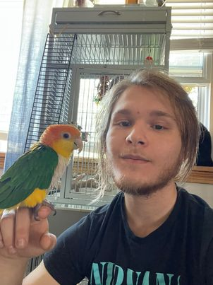

William B Bisson

Small Things About Me.
- My name is William Bisson but I go by Bekim in everycase but legally
- I am currently a fulltime welder working on a career change
- Software developer proficient in Java, Python, and web development technologies
Education
- Firestone Community Learning Center
- Portage Lakes Career Center
- The Complete 2024 Web Development Bootcamp
Work Experience
- Die Welder-Canton Drop Forge
11/27/23-Current
- Experienced die welder proficient in Flux-Cored Arc Welding (FCAW), Shielded Metal Arc Welding (SMAW), and Gas Tungsten Arc Welding (GTAW)
- Specializing in plasma cutting and arc gouging techniques for precise metal cutting and shaping
- Skilled in working on heavy dies requiring preheating to 700 degrees Fahrenheit, ensuring durable welds and contributing to efficient manufacturing and repair operations with meticulous attention to detail.
- Welder 1-Mac LTT
6/6/2022-08/05/2023
- At my previous job I worked on Liquid tank trailers
- I handled many tasks, including MIG (GMAW) welding and TIG (GTAW) welding on various parts of the trailers including:
- Putting up or welding pipe racks
- Welding all iping connected to the rack
- Welding all Bumpers to the trailers
Skills
Organizational Skills
- Task prioritization
- Meeting deadlines
- Project planning
- Efficiency
Attention to Detail
- Accuracy in work
- Proofreading and editing
- Organization skills
- Quality control
Adaptability and Flexibility
- Ability to handle change
- Learning new skills quickly
- Stress management
- Multitasking
Communication Skills
Verbal and written communication
Active listening
Presentation skills
Public speaking
Contact me
Hobbies